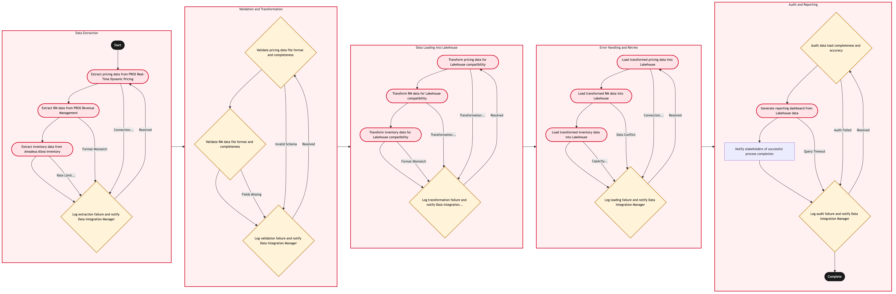

Updated 2026-08-20
Pricing and RM Data Feed to the Lakehouse
Process flow
Click to zoom

Process steps
▼
Phase 1 — Data Extraction
4 steps
| Step | Activity | Role | System | Input | Output | KPI | Dec | Exc | Pain point |
|---|---|---|---|---|---|---|---|---|---|
| 1.1 | Extract pricing data from PROS Real-Time Dynamic Pricing | PROS Data Extractor | PROS Real-Time Dynamic PricingA | Scheduled batch job | Pricing data file | Data extraction time < 30 minutes | N | Y | Network latency between PROS and Data Integration server. |
| 1.2 | Extract RM data from PROS Revenue Management | PROS Data Extractor | PROS Revenue ManagementB | Scheduled batch job | RM data file | Data extraction time < 30 minutes | N | Y | Inconsistent data formats from PROS. |
| 1.3 | Extract inventory data from Amadeus Altea Inventory | Amadeus Data Extractor | Amadeus Altea InventoryA | Scheduled batch job | Inventory data file | Data extraction time < 30 minutes | N | Y | API rate limits on Amadeus. |
| 1.4 | Log extraction failure and notify Data Integration Manager | Data Integration Team Lead | Data Integration SystemU | Failure details | Notification to Data Integration Manager | Response time < 1 hour | Y | N | Manual intervention required for recovery. |
▼
Phase 2 — Validation and Transformation
3 steps
| Step | Activity | Role | System | Input | Output | KPI | Dec | Exc | Pain point |
|---|---|---|---|---|---|---|---|---|---|
| 2.1 | Validate pricing data file format and completeness | Data Validator | Validation SystemU | Pricing data file | Validation report | Validation time < 5 minutes | Y | N | Incorrect schema leading to validation failures. |
| 2.2 | Validate RM data file format and completeness | Data Validator | Validation SystemU | RM data file | Validation report | Validation time < 5 minutes | Y | N | Missing fields causing validation failures. |
| 2.3 | Log validation failure and notify Data Integration Manager | Data Integration Team Lead | Data Integration SystemU | Failure details | Notification to Data Integration Manager | Response time < 1 hour | Y | N | Manual intervention required for data correction. |
▼
Phase 3 — Data Loading into Lakehouse
4 steps
| Step | Activity | Role | System | Input | Output | KPI | Dec | Exc | Pain point |
|---|---|---|---|---|---|---|---|---|---|
| 3.1 | Transform pricing data for Lakehouse compatibility | Data Transformer | Transformation SystemU | Validated pricing data file | Transformed pricing data | Transformation time < 10 minutes | N | Y | Data transformation rules are complex. |
| 3.2 | Transform RM data for Lakehouse compatibility | Data Transformer | Transformation SystemU | Validated RM data file | Transformed RM data | Transformation time < 10 minutes | N | Y | Complex transformation logic. |
| 3.3 | Transform inventory data for Lakehouse compatibility | Data Transformer | Transformation SystemU | Validated inventory data file | Transformed inventory data | Transformation time < 10 minutes | N | Y | Inconsistent inventory data formats. |
| 3.4 | Log transformation failure and notify Data Integration Manager | Data Integration Team Lead | Data Integration SystemU | Failure details | Notification to Data Integration Manager | Response time < 1 hour | Y | N | Manual intervention required for correction. |
▼
Phase 4 — Error Handling and Retries
4 steps
| Step | Activity | Role | System | Input | Output | KPI | Dec | Exc | Pain point |
|---|---|---|---|---|---|---|---|---|---|
| 4.1 | Load transformed pricing data into Lakehouse | Data Loader | Lakehouse SystemU | Transformed pricing data | Pricing data loaded into Lakehouse | Loading time < 5 minutes | N | Y | Lakehouse connection issues. |
| 4.2 | Load transformed RM data into Lakehouse | Data Loader | Lakehouse SystemU | Transformed RM data | RM data loaded into Lakehouse | Loading time < 5 minutes | N | Y | Data conflicts during loading. |
| 4.3 | Load transformed inventory data into Lakehouse | Data Loader | Lakehouse SystemU | Transformed inventory data | Inventory data loaded into Lakehouse | Loading time < 5 minutes | N | Y | Volume of data exceeds system capacity. |
| 4.4 | Log loading failure and notify Data Integration Manager | Data Integration Team Lead | Data Integration SystemU | Failure details | Notification to Data Integration Manager | Response time < 1 hour | Y | N | Manual intervention required for resolution. |
▼
Phase 5 — Audit and Reporting
4 steps
| Step | Activity | Role | System | Input | Output | KPI | Dec | Exc | Pain point |
|---|---|---|---|---|---|---|---|---|---|
| 5.1 | Audit data load completeness and accuracy | Data Auditor | Lakehouse SystemU | Loaded data | Audit report | Audit time < 30 minutes | Y | N | Inaccuracies in loaded data. |
| 5.2 | Generate reporting dashboard from Lakehouse data | Data Analyst | Reporting SystemU | Lakehouse data | Reporting dashboard | Dashboard generation time < 1 hour | N | Y | Slow query performance on large datasets. |
| 5.3 | Notify stakeholders of successful process completion | Data Integration Team Lead | Notification SystemU | Audit report and dashboard | Stakeholder notification | Notification time < 1 hour | N | N | Email delivery failures. |
| 5.4 | Log audit failure and notify Data Integration Manager | Data Integration Team Lead | Data Integration SystemU | Failure details | Notification to Data Integration Manager | Response time < 1 hour | Y | N | Manual intervention required for correction. |
Swim lanes
PROS Data Extractor1.1 1.2
Amadeus Data Extractor1.3
Data Integration Team Lead1.4 2.3 3.4 4.4 5.3 5.4
Data Validator2.1 2.2
Data Transformer3.1 3.2 3.3
Data Loader4.1 4.2 4.3
Data Auditor5.1
Data Analyst5.2
Systems touched
PROS Real-Time Dynamic PricingAPROS Revenue ManagementBAmadeus Altea InventoryAData Integration SystemUValidation SystemUTransformation SystemULakehouse SystemUReporting SystemUNotification SystemU
Key performance indicators
- Data extraction time < 30 minutes
- Validation time < 5 minutes
- Transformation time < 10 minutes
- Loading time < 5 minutes
- Audit time < 30 minutes
Risks and control points
- Network connectivity issues between systems.
- Inconsistent data formats from external sources.
- Complexity in data transformation rules.
- Capacity limitations of the Lakehouse system.
- Slow performance of reporting queries on large datasets.
Air Canada Process Wiki — process and systems reference compiled from public sources
for IT Application Management and User Support pre-sales discovery.
Built 2026-08-20. Every system carries an evidence tier: tier C is an industry pattern and tier U is an open
question, and neither should be asserted as fact about Air Canada without confirmation in discovery.
Not affiliated with or endorsed by Air Canada. Air Canada, Aeroplan and Altitude are trademarks of Air Canada.